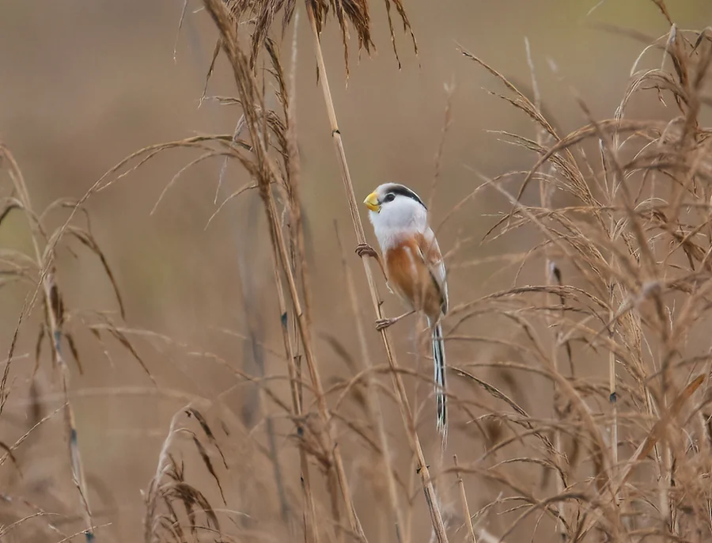

鸟类 · 动物界
震旦鸦雀 Paradoxornis heudei

中国东部芦苇湿地特有的小型鸟类，依赖成片芦苇生存，因栖息地萎缩被列为近危物种。
- 分类
- 门脊索动物门纲鸟纲目雀形目科鸦雀科属鸦雀属
- 栖息环境
- 低海拔芦苇沼泽、河口湿地与湖泊边缘的成片芦苇丛
- 地理分布
- 中国东部沿海、长江流域及东北部分芦苇湿地，为中国特有
- 保护级别
- IUCN 近危（NT）；中国国家二级保护动物
物种志
震旦鸦雀体长约 18 cm，嘴短而厚、呈黄色，头顶灰褐，眉纹浅色，喉部与腹部偏白，尾羽较长。它一生几乎离不开芦苇：在芦苇茎秆间攀爬跳跃，用厚实的嘴剥开苇叶寻找昆虫和蜘蛛，也会取食少量植物种子。繁殖期在芦苇丛中编织杯状巢，把巢牢牢固定在几根苇秆之间。
震旦鸦雀主要分布于中国东部沿海及长江流域的芦苇湿地，也见于黑龙江、辽宁等地的芦苇沼泽。围垦、割苇、水利工程和湿地退化使适宜栖息地不断减少，种群呈下降趋势。它被列为中国国家二级保护动物，IUCN 近危（NT）。保护成片、水位稳定的芦苇湿地，是这一物种存续的关键。
形态与习性
- 体长约 18 cm
- 嘴短厚、黄色，适合剥开苇叶
- 栖息几乎完全依赖成片芦苇湿地
- 食性昆虫、蜘蛛为主，兼食少量种子
- 繁殖在芦苇秆间编织杯状巢
- 保护国家二级；IUCN 近危
趣味知识
- 震旦鸦雀的英文名 Reed Parrotbill 直译就是“芦苇鸦雀”，点明了它的栖息地。
- 它能在细软的芦苇秆之间灵活攀爬，靠的是短而有力的嘴和脚。
- 湿地围垦和过度割苇是它数量下降的主要原因。